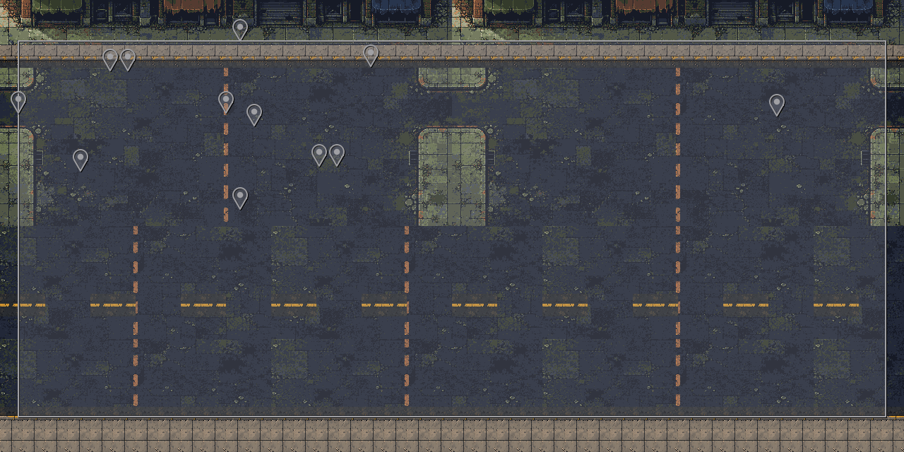
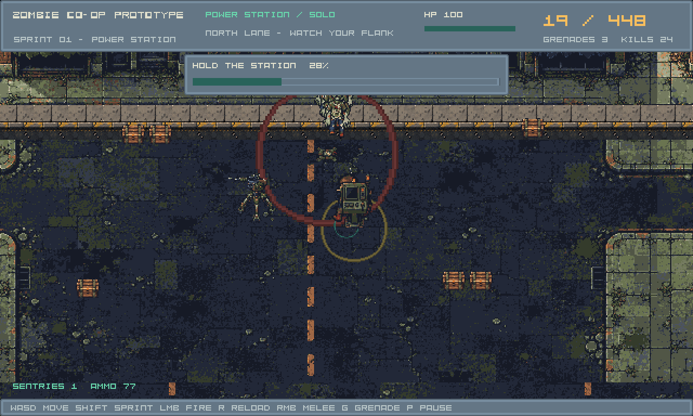

1280 × 640, six native layers, reused authored art. Camera/input and existing combat share world coordinates. This is a runtime slice; tile seams, concave navigation and human route acceptance remain open.
Play candidate · Hashes and receipt · Stable technical report


Review fixture starts at (900,450), uses the same renderer and map pipeline.

Mapped encounter: 148 deaths, 1 blast, exit 0. The editor-saved map also runs from a different working directory through the same loader.